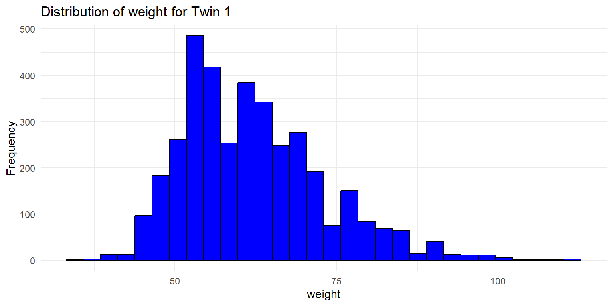
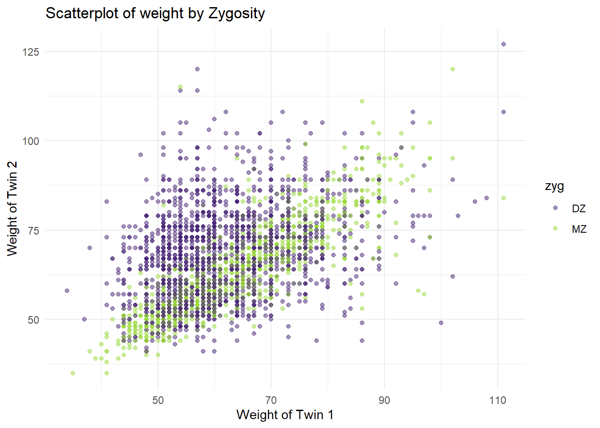
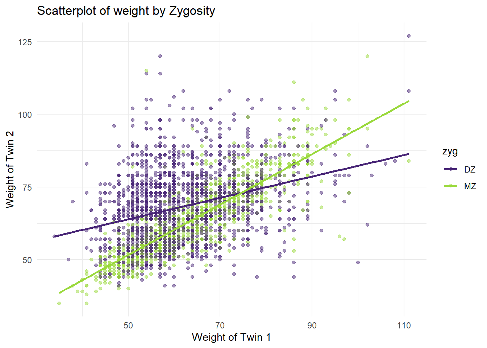
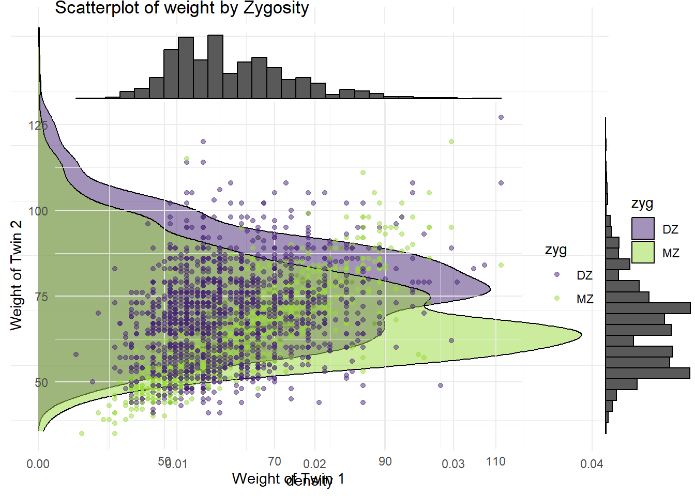
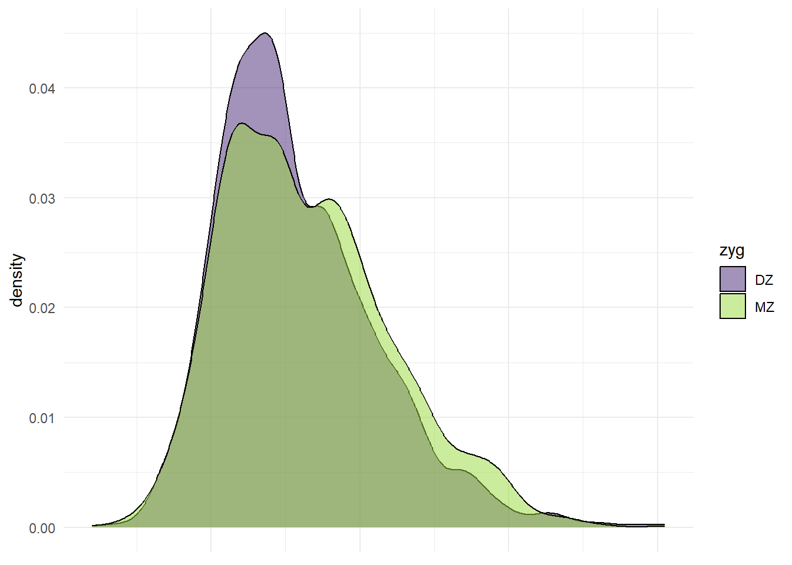
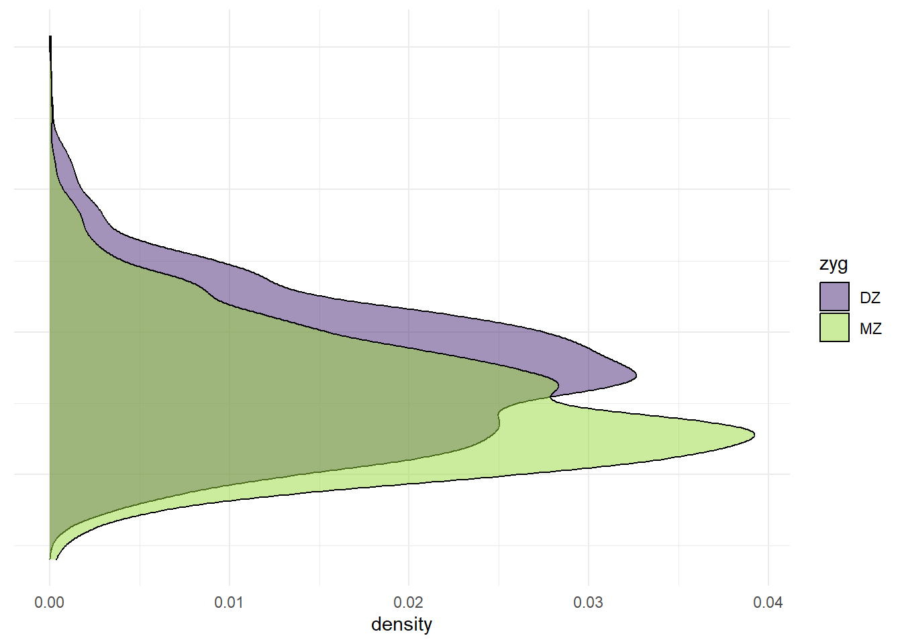
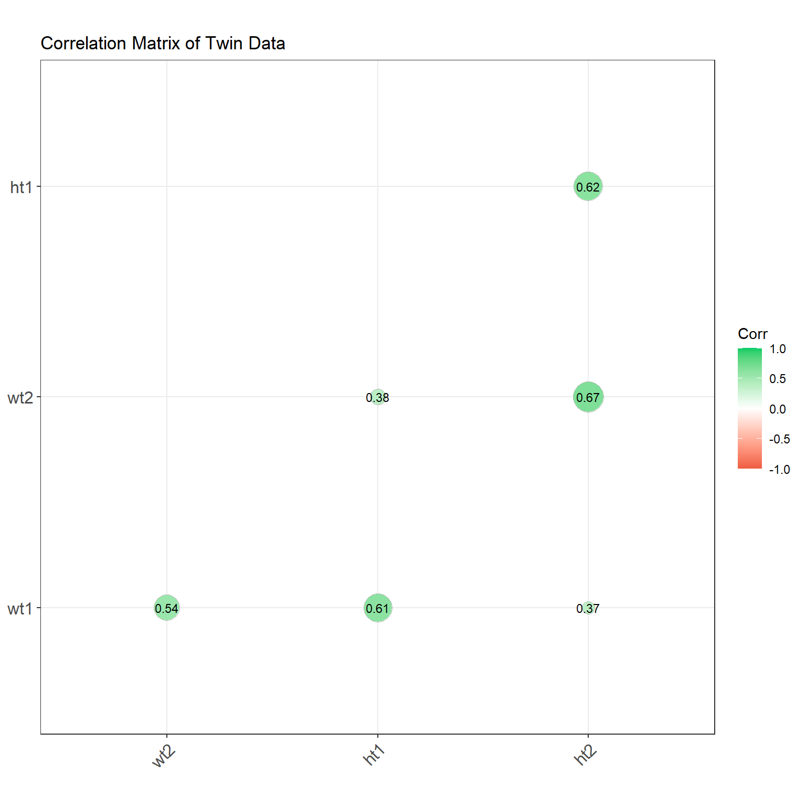

3 Wide Form Data
Wide form data is a common way to store data, especially when it comes from family data. surveys or experiments where each family has multiple members (twins, siblings etc) In this form, each row represents a family, and each column represents a variable or measurement for a specific family member. This format is easy to understand and work with, but it can be challenging for certain types of analyses or visualizations. In this section, demonstrate straightforward ways to import, summarize, and visualize wide form data using the twinData dataset from the OpenMx package.
3.1 Import Data
We’re going to use the twinData dataset from the OpenMx package. This dataset contains 3,808 pairs of Australian twins on the 12 variables.
## ── Attaching core tidyverse packages ──────────────────────── tidyverse 2.0.0 ──
## ✔ dplyr 1.1.4 ✔ readr 2.1.5
## ✔ forcats 1.0.0 ✔ stringr 1.5.1
## ✔ ggplot2 3.5.1 ✔ tibble 3.2.1
## ✔ lubridate 1.9.3 ✔ tidyr 1.3.1
## ✔ purrr 1.0.2
## ── Conflicts ────────────────────────────────────────── tidyverse_conflicts() ──
## ✖ dplyr::filter() masks stats::filter()
## ✖ dplyr::lag() masks stats::lag()
## ℹ Use the conflicted package (<http://conflicted.r-lib.org/>) to force all conflicts to become errors##
## Attaching package: 'OpenMx'
##
## The following object is masked from 'package:BGmisc':
##
## vech3.2 Data Structure
Let’s take a look at the structure of the dataset using the class and glimpse functions.
## [1] "data.frame"## Rows: 3,808
## Columns: 16
## $ fam <int> 1, 2, 3, 4, 5, 6, 7, 8, 9, 10, 11, 12, 13, 14, 15, 16, 17, 18…
## $ age <int> 21, 24, 21, 21, 19, 26, 23, 29, 24, 28, 29, 19, 23, 22, 23, 2…
## $ zyg <int> 1, 1, 1, 1, 1, 1, 1, 1, 1, 1, 1, 1, 1, 1, 1, 1, 1, 1, 1, 1, 1…
## $ part <int> 2, 2, 2, 2, 2, 2, 2, 2, 2, 2, 2, 2, 2, 2, 2, 2, 2, 2, 2, 2, 2…
## $ wt1 <int> 58, 54, 55, 66, 50, 60, 65, 40, 60, 76, 48, 70, 51, 53, 58, 4…
## $ wt2 <int> 57, 53, 50, 76, 48, 60, 65, 39, 57, 64, 51, 67, 51, 55, 57, 5…
## $ ht1 <dbl> 1.7000, 1.6299, 1.6499, 1.5698, 1.6099, 1.5999, 1.7500, 1.559…
## $ ht2 <dbl> 1.7000, 1.6299, 1.6799, 1.6499, 1.6299, 1.5698, 1.7698, 1.529…
## $ htwt1 <dbl> 20.0692, 20.3244, 20.2020, 26.7759, 19.2894, 23.4375, 21.2245…
## $ htwt2 <dbl> 19.7232, 19.9481, 17.7154, 27.9155, 18.0662, 24.3418, 20.7476…
## $ bmi1 <dbl> 20.9943, 21.0828, 21.0405, 23.0125, 20.7169, 22.0804, 21.3861…
## $ bmi2 <dbl> 20.8726, 20.9519, 20.1210, 23.3043, 20.2583, 22.3454, 21.2270…
## $ cohort <chr> "younger", "younger", "younger", "younger", "younger", "young…
## $ zygosity <fct> MZFF, MZFF, MZFF, MZFF, MZFF, MZFF, MZFF, MZFF, MZFF, MZFF, M…
## $ age1 <int> 21, 24, 21, 21, 19, 26, 23, 29, 24, 28, 29, 19, 23, 22, 23, 2…
## $ age2 <int> 21, 24, 21, 21, 19, 26, 23, 29, 24, 28, 29, 19, 23, 22, 23, 2…As we can see, the dataset contains 3808 observations of 16 variables. Most of these variables include two entries, one for twin 1 and one for twin 2. The zygosity variable indicates the zygosity of the twins, while other variables represent different measurements or characteristics of the twins, and denote which twin they refer to by the suffixes 1 and 2.
We can also see that the dataset contains a mix of numeric and character variables. To improve the readability of the dataset, we are going to split the information from the zygosity variable into two separate variables: sex and zyg. This will make it easier to analyze and visualize the data later on.
df <- df %>% mutate(sex =
case_when(zygosity %in% c("MZFF","DZFF") ~ "F",
zygosity %in% c("MZMM","DZMM") ~ "M",
TRUE ~ "OS"),
zyg = case_when(zygosity %in% c("MZFF","MZMM") ~ "MZ",
zygosity %in% c("DZFF","DZMM","DZOS") ~ "DZ",
TRUE ~ NA_character_ ))3.2.1 Annotated explainaton for the code snippet above:
The provided R code uses the tidyverse package’s dplyr library to manipulate a data frame named df. The mutate function is used to create new variables or modify existing ones within the data frame. (In this case it is creating sex and over writing zyg. Here’s an annotation of what each part of the code is doing:
- Data Frame Assignment:
df <- df %>%
- This line indicates that we are taking the existing data frame
dfand using the%>%operator (pipe) to pass it through additional functions. The result will be stored back into thedf.
- Mutate Function:
mutate(sex = ..., zyg = ...)
The
mutatefunction is used to add new columns to the data frame or change existing ones. In this case, one new columnsexis being added and the existing columnzygis being modified.Creating
sexColumn:sex = case_when(...)
This creates a new column named sex based on conditions applied to the zygosity column. The case_when function is similar to a series of if-else statements. For each row, it checks the conditions in order and assigns a value to sex based on the first matching condition.
Conditions for
sexColumn:zygosity %in% c("MZFF","DZFF") ~ "F"
This condition checks if the zygosity value is either “MZFF” or “DZFF”. If true, “F” (Female) is assigned to the sex column.
zygosity %in% c("MZMM","DZMM") ~ "M"
This checks if the zygosity value is either “MZMM” or “DZMM”. If true, “M” (Male) is assigned to the sex column.
TRUE ~ "OS"
This is a catch-all condition that assigns “OS” (Other or Unknown sex) if none of the above conditions are met.
Creating
zygColumn:zyg = case_when(...)
Similar to the sex column, this line overwrites an old column zyg that categorizes zygosity into broader categories.
Conditions for
zygColumn:zygosity %in% c("MZFF","MZMM") ~ "MZ"
Checks if zygosity is either “MZFF” or “MZMM” and assigns “MZ” (Monozygotic) indicating identical twins.
zygosity %in% c("DZFF","DZMM","DZOS") ~ "DZ"- Checks if zygosity falls into any of “DZFF”, “DZMM”, or “DZOS”, assigning “DZ” (Dizygotic) indicating fraternal twins.
TRUE ~ NA_character_- Assigns a missing value (
NA) if none of the above conditions are met, possibly used to handle cases where zygosity data is not clearly defined or is missing.
- Assigns a missing value (
This code effectively categorizes individuals in the dataset based on zygosity into more generalizable groups for sex and twin status, which could be crucial for genetic or behavioral studies.
3.3 Summary Statistics
3.3.1 Numeric Variables
Calculate summary statistics for numeric variables across the full sample. This helps provide a quick overview of central tendencies and variability.
# Calculate summary statistics for numeric variables across the full sample
summary_stats <- df %>%
summarise(across(where(is.numeric), list(
mean = ~mean(., na.rm = TRUE),
sd = ~sd(., na.rm = TRUE),
median = ~median(., na.rm = TRUE),
min = ~min(., na.rm = TRUE),
max = ~max(., na.rm = TRUE),
IQR = ~IQR(., na.rm = TRUE)
), .names = "{col}_{fn}")) %>%
pivot_longer(
cols = everything(),
names_to = c("variable", "statistic"),
names_sep = "_"
) %>%
pivot_wider(
names_from = statistic,
values_from = value
)
summary_stats## # A tibble: 13 × 7
## variable mean sd median min max IQR
## <chr> <dbl> <dbl> <dbl> <dbl> <dbl> <dbl>
## 1 fam 1904. 1099. 1904. 1 3808 1904.
## 2 age 34.5 14.2 30 17 88 19
## 3 part 1.93 0.265 2 0 2 0
## 4 wt1 62.2 10.9 60 34 111 15
## 5 wt2 65.6 12.2 65 35 127 16
## 6 ht1 1.66 0.0896 1.65 1.34 1.98 0.130
## 7 ht2 1.69 0.0990 1.7 1.40 1.99 0.140
## 8 htwt1 22.5 3.16 21.9 13.3 41.9 3.84
## 9 htwt2 22.8 3.19 22.3 14.2 46.2 3.78
## 10 bmi1 21.7 0.940 21.6 18.1 26.1 1.21
## 11 bmi2 21.8 0.939 21.7 18.6 26.8 1.18
## 12 age1 34.5 14.2 30 17 88 19
## 13 age2 34.5 14.2 30 17 88 193.4 Frequency Tables
Create frequency tables for categorical variables like zygosity and sex, providing a clear picture of the distribution of these categories within the dataset.
# Counting 'zygosity' and calculating percentages
zygosity_summary <- df %>%
count(zyg, name = "count") %>%
mutate(percentage = count / sum(count) * 100) %>%
rename(category = zyg) %>% # Renaming the column for clarity
mutate(variable = "zygosity") # Adding a descriptor column for the variable
# Counting 'sex' and calculating percentages
sex_summary <- df %>%
count(sex, name = "count") %>%
mutate(percentage = count / sum(count) * 100) %>%
rename(category = sex) %>% # Renaming the column for clarity
mutate(variable = "sex") # Adding a descriptor column for the variable
# Combining both summaries into a single dataframe
combined_summary <- bind_rows(zygosity_summary, sex_summary) %>%
select(variable, category, everything()) # Reordering columns for clarity
combined_summary## variable category count percentage
## 1 zygosity DZ 2009 52.75735
## 2 zygosity MZ 1799 47.24265
## 3 sex F 1983 52.07458
## 4 sex M 919 24.13340
## 5 sex OS 906 23.79202What if you want to examine effects by cohort? You can use the group_by function to group the data by cohort and then calculate the summary statistics for each cohort.
library(tidyverse)
# Grouping by 'cohort' and calculating summary statistics for each group across values that are numeric
df_summary <- df %>%
group_by(cohort) %>%
summarise(across(where(is.numeric), list(
mean = ~mean(., na.rm = TRUE),
sd = ~sd(., na.rm = TRUE),
median = ~median(., na.rm = TRUE),
IQR = ~IQR(., na.rm = TRUE)
), .names = "{.col}_{.fn}")) %>%
# Ensure only statistic columns are being pivoted
pivot_longer(
cols = -cohort, # Exclude 'cohort' from pivoting
names_to = c("variable", "statistic"),
names_sep = "_"
)
# lock in the variable order
variable_order <- unique(df_summary$variable)
df_summary <- df_summary %>%
pivot_wider(
names_from = statistic,
values_from = value,
values_fn = list(value = mean) # Aggregate if necessary
)
df_summary %>% mutate(variable = factor(variable, levels = variable_order)) %>%
arrange(variable, cohort)## # A tibble: 26 × 6
## cohort variable mean sd median IQR
## <chr> <fct> <dbl> <dbl> <dbl> <dbl>
## 1 older fam 2859 548. 2859 949
## 2 younger fam 955 551. 955 954
## 3 older age 45.4 12.2 42 19
## 4 younger age 23.5 3.66 23 7
## 5 older part 1.95 0.224 2 0
## 6 younger part 1.92 0.299 2 0
## 7 older wt1 63.8 11.2 62 15
## 8 younger wt1 60.5 10.3 59 14
## 9 older wt2 67.0 12.7 66 19
## 10 younger wt2 64.1 11.6 64 17
## # ℹ 16 more rowsWhat about descriptive statistics by zygosity and sex?
library(tidyverse)
# Grouping by 'zyg,sex' and calculating summary statistics for each group
df_summary <- df %>%
group_by(zyg,sex) %>%
summarise(across(where(is.numeric), list(
mean = ~mean(., na.rm = TRUE),
sd = ~sd(., na.rm = TRUE),
median = ~median(., na.rm = TRUE),
IQR = ~IQR(., na.rm = TRUE)
), .names = "{.col}_{.fn}")) %>%
# Ensure only statistic columns are being pivoted
pivot_longer(
cols = -c(zyg,sex), # Exclude 'zygosity' from pivoting
names_to = c("variable", "statistic"),
names_sep = "_"
)## `summarise()` has grouped output by 'zyg'. You can override using the `.groups`
## argument.# lock in the variable order
variable_order <- unique(df_summary$variable)
df_summary <- df_summary %>%
pivot_wider(
names_from = statistic,
values_from = value,
values_fn = list(value = mean) # Aggregate if necessary
)
df_summary %>% mutate(variable = factor(variable, levels = variable_order)) %>%
arrange(variable,zyg,sex)## # A tibble: 65 × 7
## # Groups: zyg [2]
## zyg sex variable mean sd median IQR
## <chr> <chr> <fct> <dbl> <dbl> <dbl> <dbl>
## 1 DZ F fam 2109. 1029. 2891 2048
## 2 DZ M fam 2144. 1009. 1370. 2042.
## 3 DZ OS fam 2509. 980. 1852. 1956.
## 4 MZ F fam 1338. 992. 1956. 1956.
## 5 MZ M fam 1750. 1010. 2583 2013
## 6 DZ F age 35.4 14.3 32 20
## 7 DZ M age 32.3 13.9 28 16
## 8 DZ OS age 32.9 13.9 28 17
## 9 MZ F age 35.7 14.3 32 21
## 10 MZ M age 34.4 14.1 31 18
## # ℹ 55 more rows3.5 Plots
3.5.1 Histograms and Scatter Plots
Visualizing distributions and relationships through histograms and scatter plots can reveal patterns or anomalies in the data that are pertinent for twin studies, especially in examining the concordance and discordance in twin weights.
ggplot(df, aes(x = wt1)) +
geom_histogram(bins=30, fill="blue", color="black") +
labs(x="weight", y="Frequency", title="Distribution of weight for Twin 1") +
theme_minimal()## Warning: Removed 97 rows containing non-finite outside the scale range
## (`stat_bin()`).
# Basic Scatter Plot of weight of Twin 1 vs. weight of Twin 2
p <- ggplot(df, aes(x=wt1, y=wt2, color=zyg)) +
geom_point(alpha=.5) +
labs(x = "Weight of Twin 1",
y = "Weight of Twin 2",
title = "Scatterplot of weight by Zygosity") +
scale_color_viridis_d(option = "virdis",
begin = 0.1,end=.85) +
theme_minimal()
p## Warning in viridisLite::viridis(n, alpha, begin, end, direction, option):
## Option 'virdis' does not exist. Defaulting to 'viridis'.## Warning: Removed 173 rows containing missing values or values outside the scale range
## (`geom_point()`).
Adding a regression line to the scatter plot.
## `geom_smooth()` using formula = 'y ~ x'## Warning: Removed 173 rows containing non-finite outside the scale range
## (`stat_smooth()`).## Warning in viridisLite::viridis(n, alpha, begin, end, direction, option):
## Option 'virdis' does not exist. Defaulting to 'viridis'.## Warning: Removed 173 rows containing missing values or values outside the scale range
## (`geom_point()`).
library(ggplot2)
library(ggExtra)
# Create marginal density plots for x and y axes
p_x <- ggplot(df, aes(x = wt1, fill = zyg)) +
geom_density(alpha = 0.5) +
theme_minimal() +
scale_fill_viridis_d(option = "viridis", begin = 0.1, end = 0.85) +
theme(axis.title.x = element_blank(),
axis.text.x = element_blank(),
axis.ticks.x = element_blank())
p_x## Warning: Removed 97 rows containing non-finite outside the scale range
## (`stat_density()`).p_y <- ggplot(df, aes(x = wt2, fill = zyg)) +
geom_density(alpha = 0.5) +
scale_fill_viridis_d(option = "viridis", begin = 0.1, end = 0.85) +
coord_flip() +
theme_minimal() +
theme(axis.title.y = element_blank(),
axis.text.y = element_blank(),
axis.ticks.y = element_blank())
p_y## Warning: Removed 86 rows containing non-finite outside the scale range
## (`stat_density()`).## Warning in viridisLite::viridis(n, alpha, begin, end, direction, option):
## Option 'virdis' does not exist. Defaulting to 'viridis'.## Warning in viridisLite::viridis(n, alpha, begin, end, direction, option):
## Option 'virdis' does not exist. Defaulting to 'viridis'.## Warning: Removed 173 rows containing missing values or values outside the scale range
## (`geom_point()`).## Warning in viridisLite::viridis(n, alpha, begin, end, direction, option):
## Option 'virdis' does not exist. Defaulting to 'viridis'.## Warning: Removed 173 rows containing missing values or values outside the scale range
## (`geom_point()`).
## Warning in viridisLite::viridis(n, alpha, begin, end, direction, option):
## Option 'virdis' does not exist. Defaulting to 'viridis'.
## Warning in viridisLite::viridis(n, alpha, begin, end, direction, option):
## Option 'virdis' does not exist. Defaulting to 'viridis'.## Warning: Removed 173 rows containing missing values or values outside the scale range
## (`geom_point()`).## Warning in viridisLite::viridis(n, alpha, begin, end, direction, option):
## Option 'virdis' does not exist. Defaulting to 'viridis'.## Warning: Removed 173 rows containing missing values or values outside the scale range
## (`geom_point()`).
## Warning in viridisLite::viridis(n, alpha, begin, end, direction, option):
## Option 'virdis' does not exist. Defaulting to 'viridis'.
## Warning in viridisLite::viridis(n, alpha, begin, end, direction, option):
## Option 'virdis' does not exist. Defaulting to 'viridis'.## Warning: Removed 173 rows containing missing values or values outside the scale range
## (`geom_point()`).## Warning in viridisLite::viridis(n, alpha, begin, end, direction, option):
## Option 'virdis' does not exist. Defaulting to 'viridis'.## Warning: Removed 173 rows containing missing values or values outside the scale range
## (`geom_point()`).
3.6 Correlation Matries and Correlograms
# Calculate the correlation matrix
library(ggcorrplot)
data(mtcars)
corr <- round(cor(mtcars), 1)
ggcorrplot(corr, hc.order = TRUE,
type = "lower",
lab = TRUE,
lab_size = 3,
method="circle",
colors = c("tomato2", "white", "springgreen3"),
title="Correlogram of mtcars",
ggtheme=theme_bw)